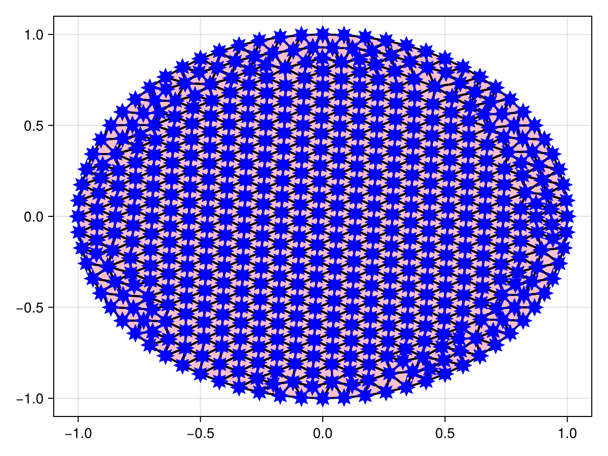
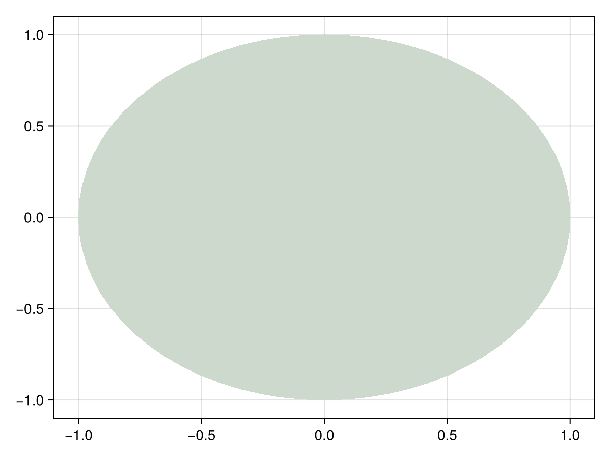
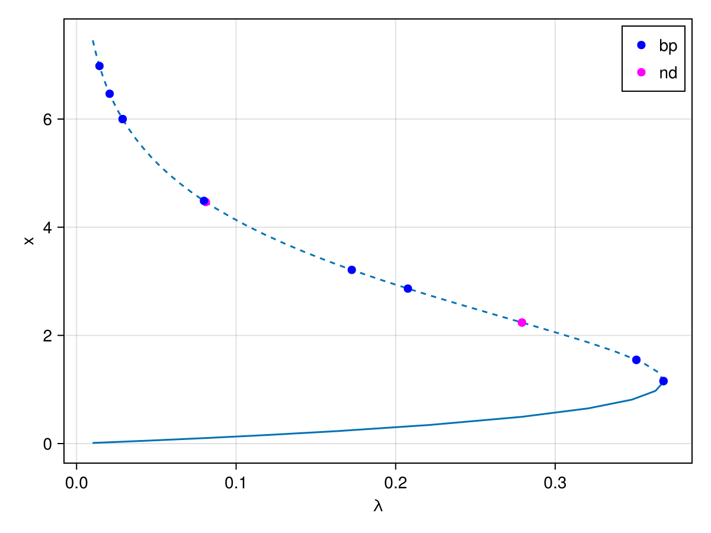
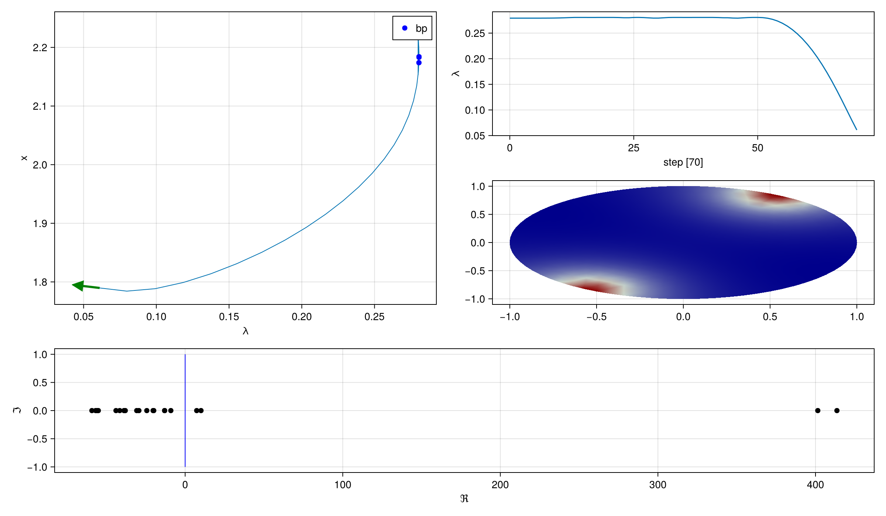
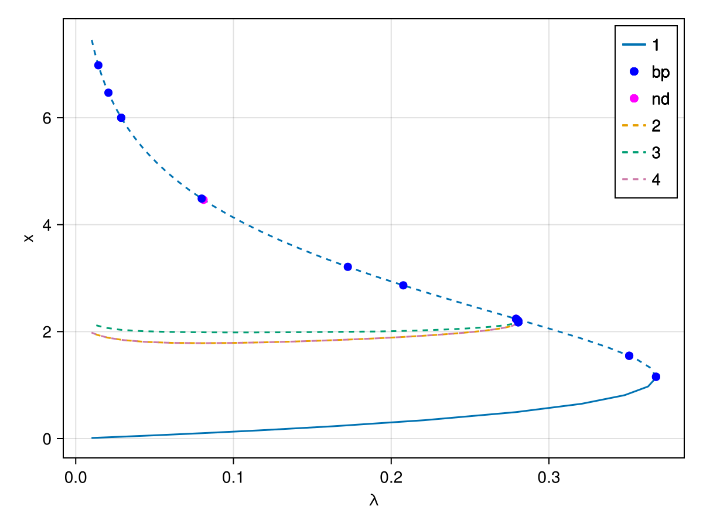

🟢 Bratu–Gelfand on an unstructured disk mesh
We consider again the Bratu–Gelfand problem of Mittelmann [Farrell] [Wouters]:
\[\Delta u + NL(\lambda,u) = 0,\qquad NL(\lambda,u)\equiv -10(u-\lambda e^u),\]
with Neumann boundary conditions, but this time the domain is a disk discretized with an unstructured mesh generated by Gmsh through GridapGmsh.jl. The solution and the mesh are visualized with GridapMakie.jl. This example shows how automatic branch switching works on an unstructured mesh.
using CairoMakieCairoMakie.activate!()using LinearAlgebrausing GridapGmshusing GridapGmsh: gmshusing GridapMakieusing Gridapusing Gridap.FESpacesusing GridapBifurcationKitusing BifurcationKitconst BK = BifurcationKitBK.set_plot_backend!(BK.BK_Makie())# plot a solution given its free dof valuesfunction plotgridap!(ax, x::Vector; k...) uh = zero(U) uh.free_values .= x plotgridap!(ax, uh; k...)endplotgridap!(ax, x; k...) = plot!(ax, Ω, x)plotgridap! (generic function with 2 methods)Building the disk mesh with Gmsh
We build the geometry of a disk from three circle arcs and generate a 2d mesh:
function buildDisk(h::Float64, R, filename = "MyDisk.msh") gmsh.initialize() model = gmsh.model # center of the disk center = model.geo.addPoint(0, 0, 0, h, -1) # three points on the circle points = [] Nd = 3 for j in 1:Nd push!(points, model.geo.addPoint(R*cos(2*pi*j/Nd), R*sin(2*pi*j/Nd), 0, h)) end # three circle arcs lines = [] for j in 1:Nd push!(lines, model.geo.addCircleArc(points[j], center, points[j+1 < Nd+1 ? j + 1 : 1])) end # curve loop and surface curveloop = model.geo.addCurveLoop([1, 2, 3]) disk = model.geo.addPlaneSurface([curveloop]) # synchronize CAD with the GMSH model gmsh.model.geo.synchronize() # physical groups t1 = gmsh.model.addPhysicalGroup(1, lines, 1) gmsh.model.addPhysicalGroup(2, [disk], 10) gmsh.model.setPhysicalName(1, t1, "boundary") # generate and write the mesh model.mesh.generate(2) gmsh.write(filename) gmsh.finalize()end# specify a rough number of triangles NbuildDisk(N::Int, R, filename = "MyDisk.msh") = buildDisk(√(2*R*pi/N), R, filename)buildDisk(800, 1)Info : Meshing 1D...
Info : [ 0%] Meshing curve 1 (Circle)
Info : [ 40%] Meshing curve 2 (Circle)
Info : [ 70%] Meshing curve 3 (Circle)
Info : Done meshing 1D (Wall 0.000305182s, CPU 0.000294s)
Info : Meshing 2D...
Info : Meshing surface 1 (Plane, Frontal-Delaunay)
Info : Done meshing 2D (Wall 0.0107039s, CPU 0.010703s)
Info : 530 nodes 1060 elements
Info : Writing 'MyDisk.msh'...
Info : Done writing 'MyDisk.msh'We then load the mesh in Gridap:
model = GmshDiscreteModel("MyDisk.msh")const Ω = Triangulation(model)num_cells(Ω)984and visualize the triangulation with GridapMakie:
fig = Figure()ax = Axis(fig[1, 1])plot!(ax, Ω)wireframe!(ax, Ω; color = :black, linewidth = 2)scatter!(ax, Ω; marker = :star8, markersize = 20, color = :blue)fig
Bifurcation problem
The weak forms are the same as in the 1d Bratu model:
order = 1reffe = ReferenceFE(lagrangian, Float64, order)V = TestFESpace(model, reffe, conformity = :H1)U = TrialFESpace(V)degree = 2*orderdΩ = Measure(Ω, degree)NL(u) = exp(u)res(u, p, v) = ∫( -∇(v)⋅∇(u) - v ⋅ (u - p.λ ⋅ (NL ∘ u)) * 10 ) * dΩjac(u, p, du, v) = ∫( -∇(v)⋅∇(du) - v ⋅ du ⋅ (1 - p.λ * (NL ∘ u)) * 10 ) * dΩd2res(u, p, du1, du2, v) = ∫( v ⋅ du1 ⋅ du2 ⋅ (NL ∘ u) * 10 * p.λ ) * dΩd3res(u, p, du1, du2, du3, v)= ∫( v ⋅ du1 ⋅ du2 ⋅ du3 ⋅ (NL ∘ u) * 10 * p.λ ) * dΩuh = zero(U)par_bratu = (λ = 0.01,)# weight for normbratuconst w = cumsum(ones(length(uh.free_values))) / length(uh.free_values)n = length(uh.free_values)w .= (1 .+ LinRange(-1, 1, n)) |> vecw .-= minimum(w)normbratu(x) = norm(x .* w) / sqrt(length(x))prob = GridapBifProblem(res, uh, par_bratu, V, U, dΩ, (@optic _.λ); jac, d2res, d3res, plot_solution = (ax, x, p; k...) -> plotgridap!(ax, x; k...), record_from_solution = (x, p; k...) -> normbratu(x))┌─ Bifurcation problem with uType typeof(Main.jac)
├─ Inplace: false
├─ Dimension: 529
├─ Symmetric: false
└─ Parameter: λWe can compute a solution and visualize it:
optn = NewtonPar(eigsolver = EigArpack())sol = BifurcationKit.solve(prob, Newton(), NewtonPar(optn; verbose = true))fig = Figure()ax = Axis(fig[1, 1])plotgridap!(ax, sol.u)fig
Continuation and branch switching
We continue the solution as a function of $\lambda$ and detect the bifurcation points:
opts = ContinuationPar(p_max = 40., p_min = 0.01, ds = 0.01, max_steps = 1000, detect_bifurcation = 3, newton_options = optn, nev = 20, tol_stability = 1e-6, n_inversion = 6)br = continuation(prob, PALC(tangent = Bordered()), opts; verbosity = 0)f, ax = BK.plot(br; dash_unstable_style = true)f
The normal form of the fourth bifurcation point gives the type of the branch point:
nf = get_normal_form(br, 4; verbose = false, scaleζ = norminf, start_with_eigen = Val(false))2-d (non simple) bifurcation point at λ ≈ 0.27915502169999007.
Kernel dimension = 2
Normal form:
0.0001⋅δλ + -0.0779⋅δλ² - 0.4036 * x1⋅δλ - 0.0021 * x2⋅δλ + 0.0083⋅x1³ - 0.0135⋅x1²⋅x2 + 0.0081⋅x2²⋅x1
0.0⋅δλ + 0.0174⋅δλ² + 0.0022 * x1⋅δλ - 0.4089 * x2⋅δλ + 0.0084⋅x1²⋅x2 - 0.0135⋅x2²⋅x1 + 0.0084⋅x2³
We then switch to the bifurcated branch:
br1 = continuation(br, 4, ContinuationPar(BK.getcontparams(br); ds = 0.001, dsmax = 0.05, max_steps = 140, detect_bifurcation = 3); verbosity = 0, nev = 10, plot = true, scaleζ = norminf, start_with_eigen = Val(false), callback_newton = BK.cbMaxNorm(100))Makie.current_figure()
f, ax = BK.plot(br, br1...; dash_unstable_style = true)f